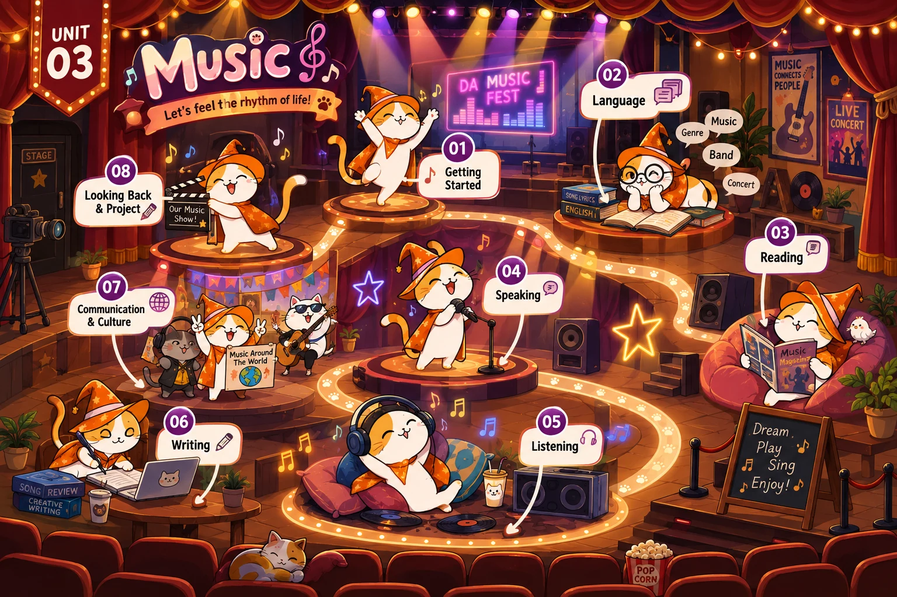

Lesson 1 · Getting started — A talented artist — chưa có bài giảng Lesson 2 · Language — chưa có bài giảng Lesson 3 · Reading: A famous TV music show — chưa có bài giảng Lesson 4 · Speaking: A music show — chưa có bài giảng Lesson 5 · Listening: An international youth music festival — chưa có bài giảng Lesson 6 · Writing: A blog about an experience at a music event — chưa có bài giảng Lesson 7 · Communication and Culture / CLIL — chưa có bài giảng Lesson 8 · Looking back and Project — chưa có bài giảngBản đồ Unit 3 đã dựng, chưa có tiết nào — tám thẻ đang khoá. Dựng xong tiết nào thì mở khoá thẻ đó.